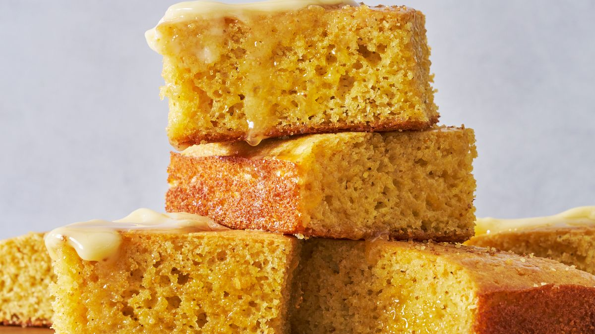

Cornbread

Cornbread is a generic name for any number of quick breads containing cornmeal. They are usually leavened by baking
powder. The cornmeal gives them a characteristically gritty texture. Cornbread is a common bread in United States
cuisine, particularly associated with the South and Southwest, as well as being a traditional staple for populations
where wheat flour was more expensive.
Ingredients
- 1 cup all-purpose flour
- 1 cup yellow cornmeal
- 1/4 cup sugar
- 1 teaspoon salt
- 1 tablespoon baking powder
- 1 cup milk
- 2 large eggs
- 1/2 stick unsalted butter, melted
Directions
- Preheat oven to 400°F.
- Grease an 8-inch square baking pan.
- In a large bowl, whisk together the flour, cornmeal, sugar, salt, and baking powder.
- In another bowl, whisk together the milk, eggs, and melted butter.
- Pour the wet ingredients into the dry and stir until just combined.
- Pour the batter into the prepared pan and bake for 20-25 minutes, or until a toothpick inserted into the center
comes out clean.